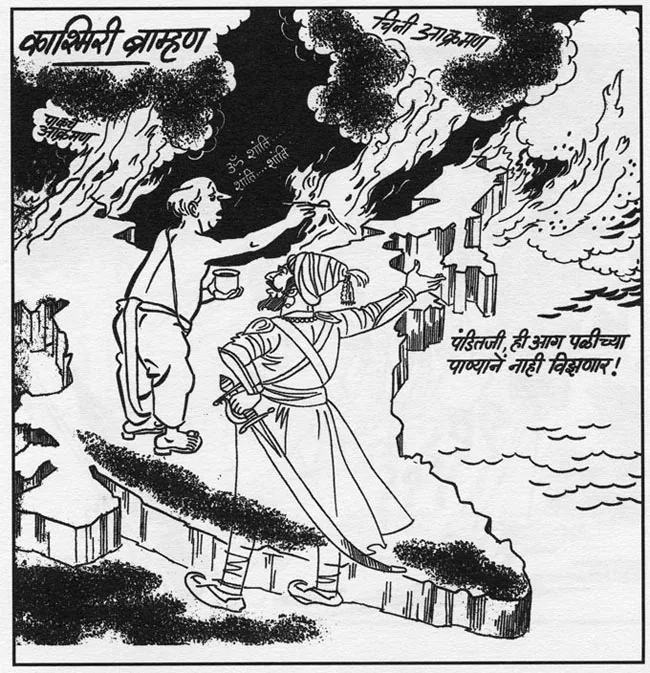

Bal Thackery
Bal Thackeray was an aberrant caricature.Thackeray began his career as a cartoonist with The Free Press Journal but it was in 1960 when he started his own political magazine, Marmik, where he really started to display his ultra-nationalistic tendencies. Marmik quickly became a platform for Thackeray to advance the interests of the Marathi-speaking locals in the Maharashtra state capital of Mumbai. He went on to become the founder of the Shiv Sena — a political organisation that demanded preferential treatment of local Maharashtrians over migrants. His organisation used a network of street thugs to enforce the interests of the Marathi-speaking locals. Thackeray was also instrumental in having Bombay, the city’s English name, changed to Mumbai.
It is well known that Thackeray admired both Walt Disney and Adolf Hitler and his cartoons, from his time spent working at Marmik, reflect an admiration for both these men. This was clearly evident in Thackeray’s drawing style, reminiscent of Disney’s pencil sketches from the 1920s and 1930s. However, I found Thackeray’s obsession with nationalism very disturbing. Thackeray’s cartoons were prescient of his future hatred that would stoke communal rioting between Hindus and Muslims. He would form an alliance with the Hindu nationalist Bharatiya Janata Party (BJP) — both parties actively participating in the Mumbai riots of 1993 that left over 900 people dead. Thackeray incited hatred, calling on his followers to form suicide squads to target Muslims.
As a cartoonist, Thackeray carried himself very simply: short-cropped hair, white collared shirt with tapered dress pants — the perfect foil for his outrageous cartoons. Thackeray, the fundamentalist leader, cut an outrageous physical presence. Wearing a saffron-coloured kurta with an assortment of beaded necklaces, he was never seen without his darkly tinted eyeglasses and meticulously maintained white beard with slicked-back grey hair. People, like Thackeray’s followers, respond more strongly to exaggerated versions of stimuli.
A rat can be trained by scientists to discriminate between a square and a rectangle — only being rewarded for recognising the rectangle. Surprisingly, the rat will respond more strongly to a rectangle that is longer and more narrow with a higher frequency than the original with which it was trained. Cartoonists, like their scientist counterparts, also attempt to capture and exaggerate the essence of their subjects in order to evoke a more physical and emotional response. Thackeray’s cartoons, however flawed, did this. Yet, Thackeray was the cartoonist who became a cartoon. He became a man held hostage to an image — an image that burned with xenophobic hatred.
Notable Works

Awards
- Award Name 1 - Year
- Award Name 2 - Year